I was part of the FIRST Robotics Competition in high school: a mechanical designer from 2017 to 2019, and team captain from 2019 to 2021.
Every January, FIRST releases a new game. You only have 6 weeks to design, fabricate, assemble, wire up, and code your robot from scratch. These robots are big (around 150 lbs!) and primarily teleoperated, with a small autonomous portion.
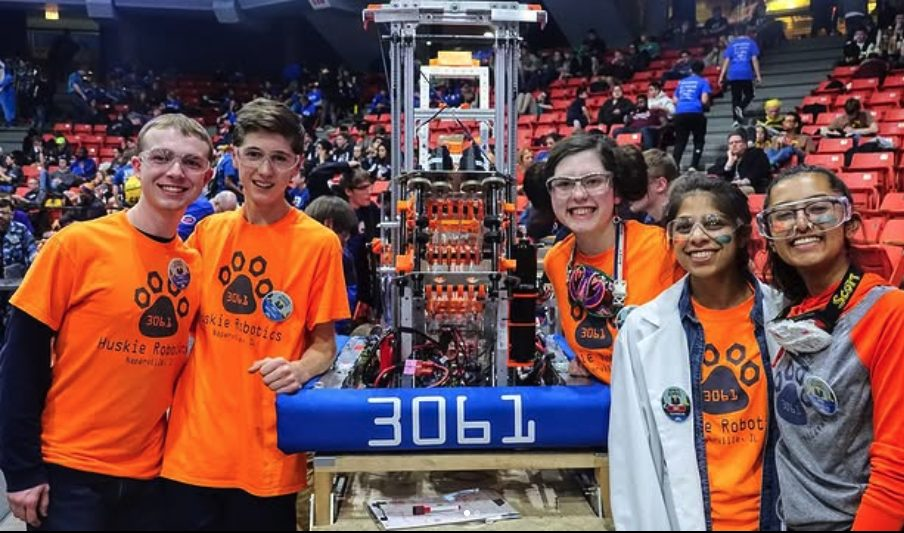
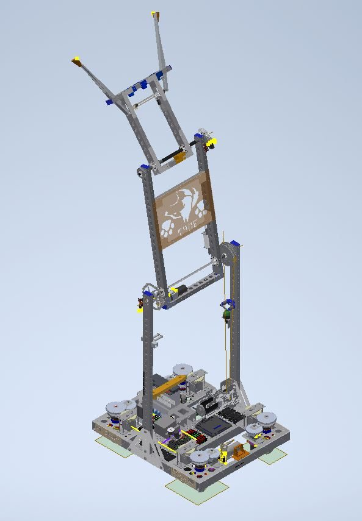
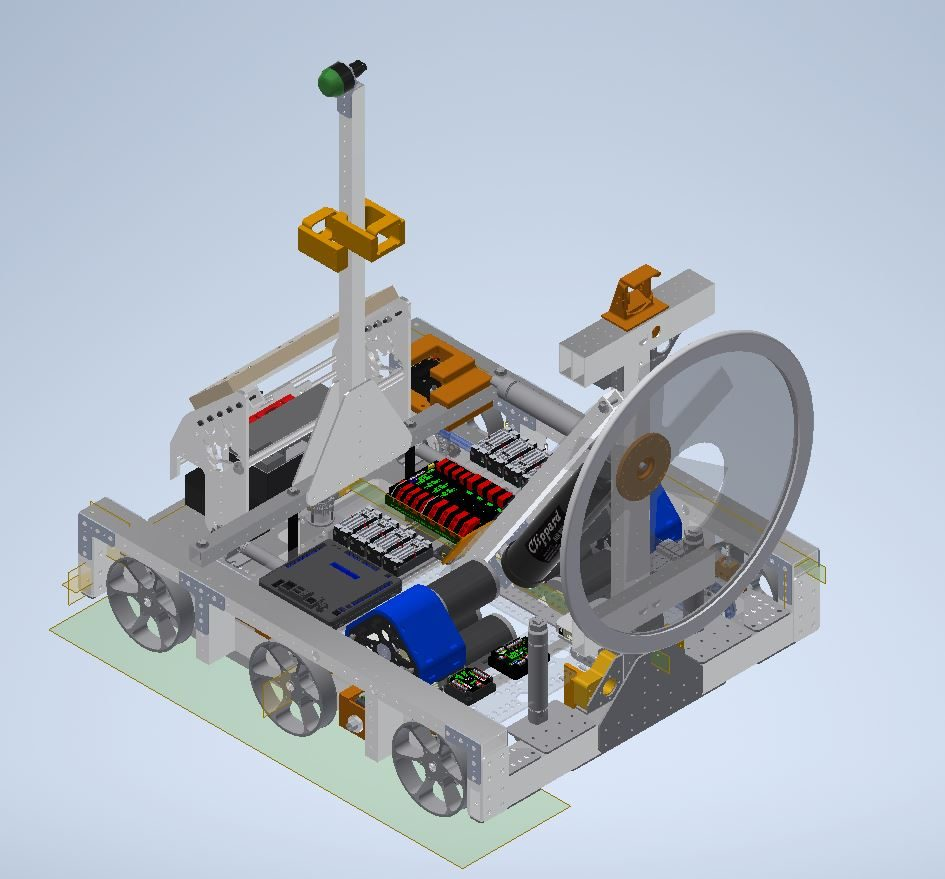
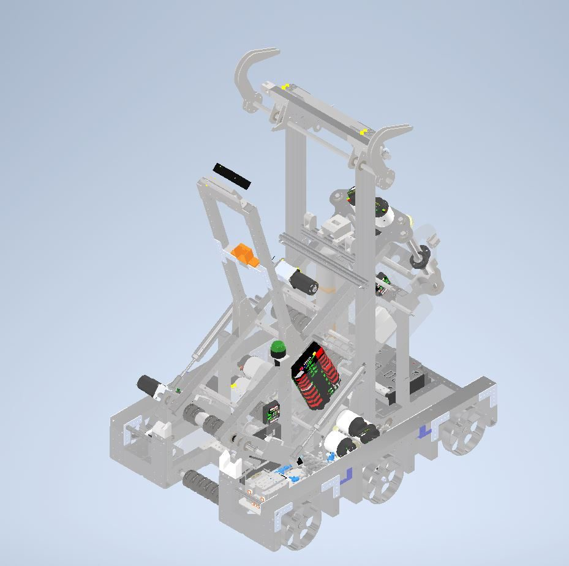
The Robot
Objectives
- Collect balls, and shoot them into the goals at the end of the field.
- In the last 30 seconds of a match, climb and hang from a swinging metal bar with up to 2 other robots.
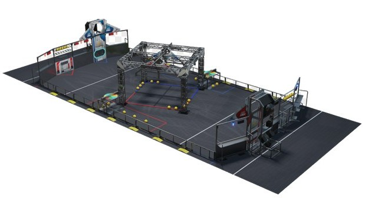
Overview
The parts I designed are in bold below, and in blue in the third image.
- Collect & shoot: intake, ball storage / conveyor, flywheel shooter
- Climber: cascading elevator
- Misc: drivetrain
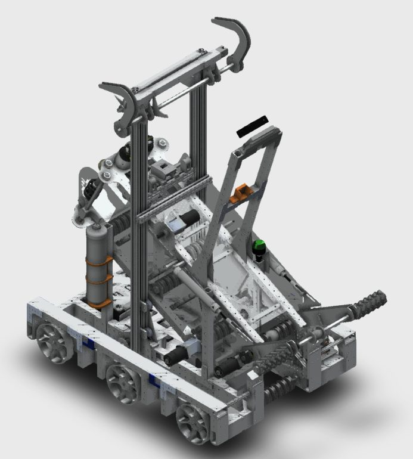
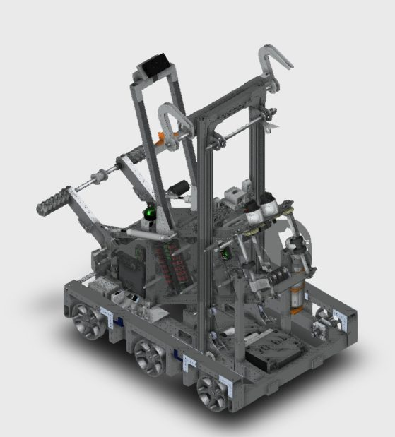
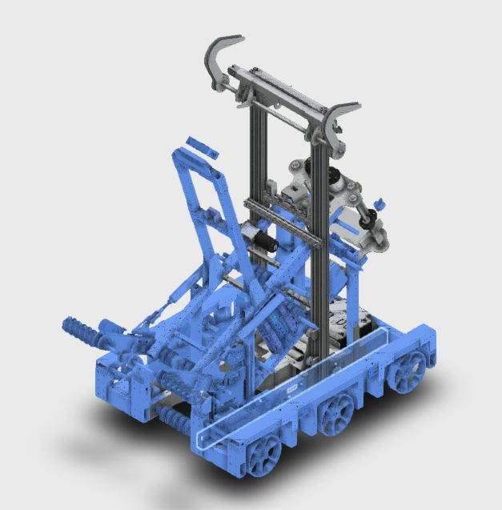
Timeline
Drivetrain
Requirements
Our customer (the strategy team) sets the requirements that drive the design:
- Go fast. Travel the length of the field in under 10 seconds.
- Push other robots around (150 lbs) that are free standing and in a neutral position.
- Serviceable in under 6 minutes. Chain, wheels, and motors must be easy to reach during competition, without removing the gearbox or wheel sub-assemblies.
- Overcome obstacles up to 1.125" on the ground, and drive over power cells (the balls).
- 120" frame perimeter, 45" max height in the starting configuration.
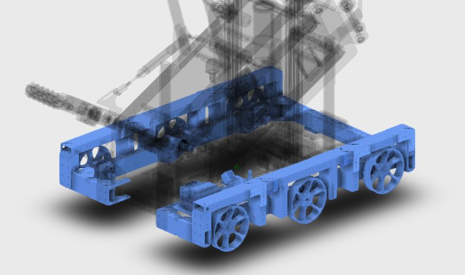
Making space
The drivetrain is a 6-wheel "West Coast" tank drive with a 0.25" drop center wheel, driven by a 2 speed gearbox. I wanted to free up the center of the robot (the red box), so the gearbox had to change:
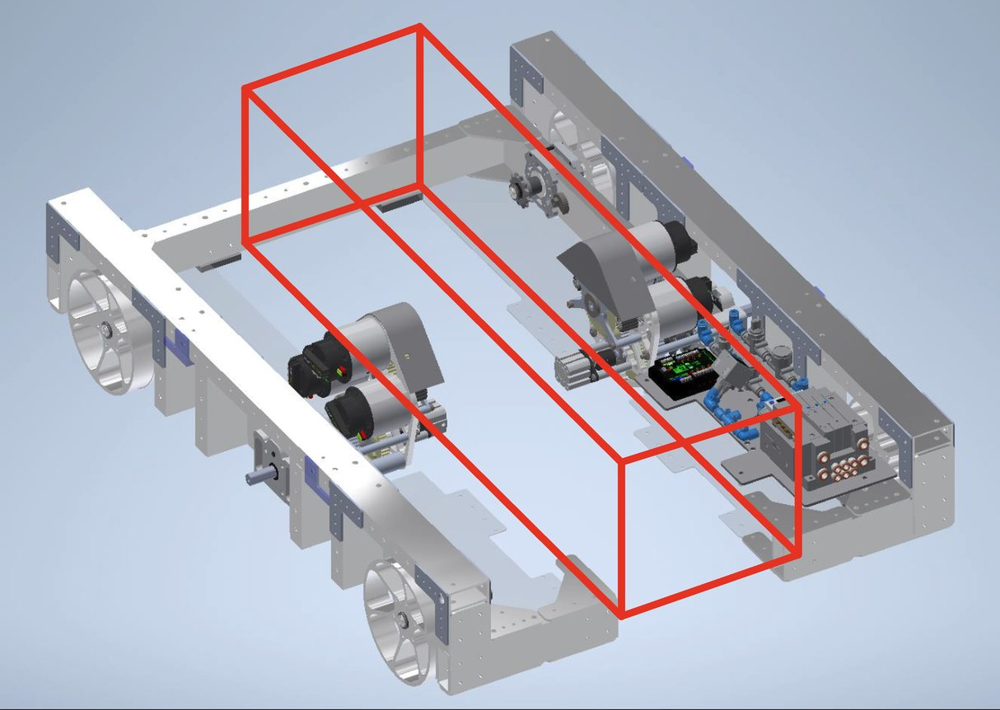
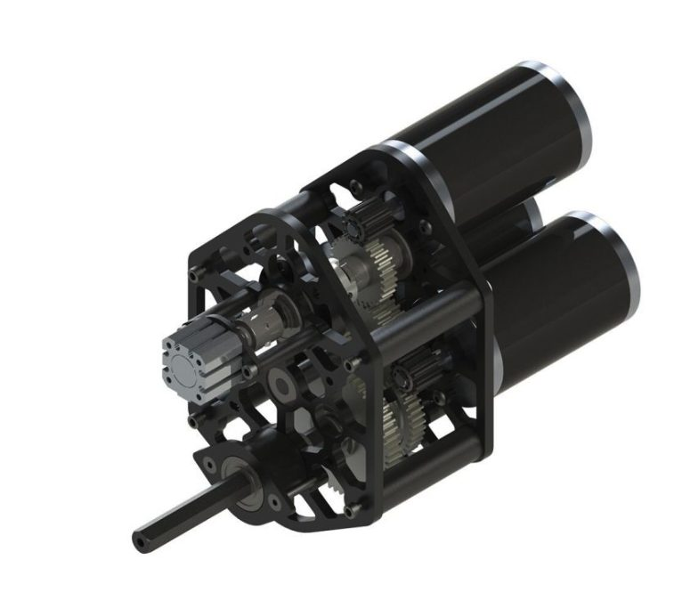
- Bulky motors cantilevered on the gearbox plate cause warp
- Too much depth; takes up space in the center of the robot
- No motor controller built in
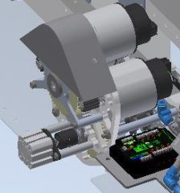
- Lighter, equally efficient
- Leverages vertical space by stacking motors above
- Built in motor controller attachments
- Steel pinion gears
Gearbox
The 2 speed gearbox uses dog gears and a piston to switch between high and low gear. The output shaft drives a sprocket and the center wheel; the outer wheels are connected via chain.
| Stage | Gears | Overall ratio | Speed |
|---|---|---|---|
| 1 | 14T → 42T | 3.00 : 1 | |
| 2 | 14T → 60T | 12.86 : 1 | |
| 3, low gear | 30T → 44T | 18.86 : 1 | 8.9 ft/s |
| 3, high gear | 34T → 40T | 15.13 : 1 | 11.1 ft/s |
Pushing force: 150 lb robot × 1.19 coefficient of friction = 794 N.
Show me the math
Gear ratios 42 / 14 = 3.00 60 / 14 = 4.286 3.00 * 4.286 = 12.86 : 1 low: 44 / 30 = 1.467 → 18.86 : 1 high: 40 / 34 = 1.176 → 15.13 : 1
Speed
motor = 6380 RPM
6" wheels = 0.4788 m / rev
v = (RPM / ratio) * 0.4788 m
* (1 min / 60 s) * (3.281 ft / 1 m)
v_low = 8.9 ft/s
v_high = 11.1 ft/s
Torque
3 motors, 4.69 N·m stall torque each
theoretical = stall * 3 * ratio
low = 265 N·m
high = 213 N·m
max friction force = 794 N
→ 397 N per side
T_axle = F * r
= 397 N * 0.0762 m
= 30.3 N·m per gearbox
The motors can put out far more torque than the wheels can use: pushing power is limited by weight and coefficient of friction.
Outcomes
- ✅Go slow & fast
- ✅Push other robots around
- ✅❌Serviceable in under 6 minutes (?)
- ✅Overcome ground obstacles
At competition, we were the #1 defensive robot and the 1st pick of Alliance 7, eliminated at semifinals.
Intake
Requirements
- "Touch own": perfect driver alignment is not necessary.
- Can withstand high speed collisions.
- Easily picks up from a variety of positions: open ground, against a wall, against a robot, in a corner.
- Does not jam.
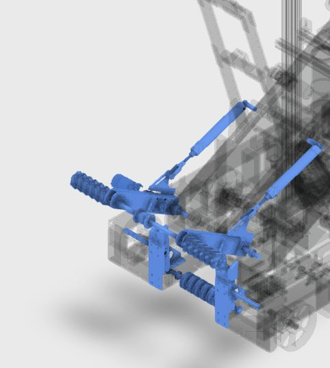
Mecanum wheels
3D printed 2" mecanum wheels "suck in" and direct power cells towards the center of the robot, into storage.
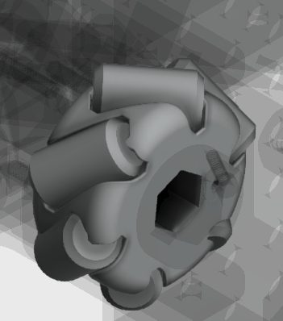
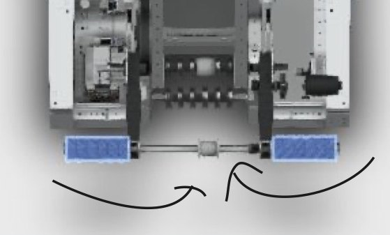
A clever* slot
- The intake can start upright to follow frame perimeter rules, then passively falls down.
- Ensures the pistons do not bear any load on impact.
- Allows the intake to "swallow" the ball.
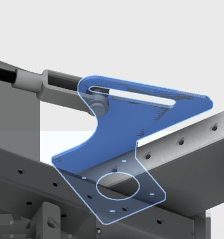
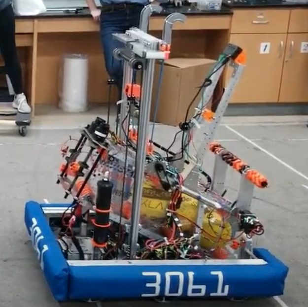
Surviving collisions
The Delrin blocks and slots are the primary protection from front and side loads:
- Slot: extra long, so there's no load on the pistons.
- Delrin blocks: keep front and side loads off the bearings and pistons.
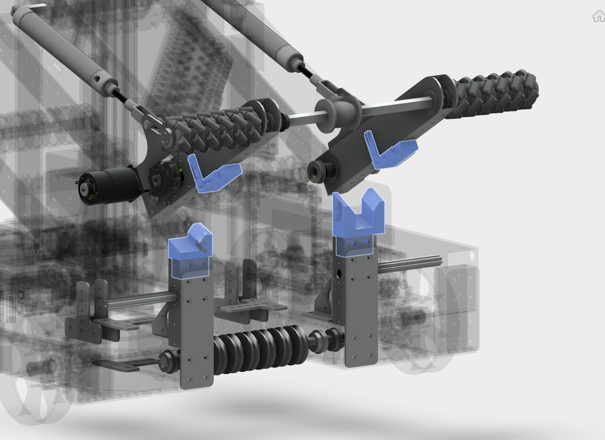
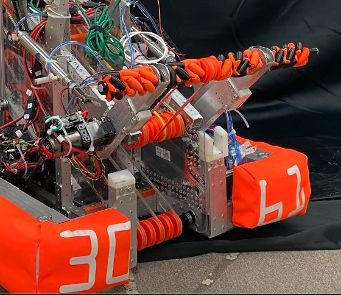
Load analysis
Worst case scenario: a 150 lb robot runs into us at 20 ft/s. Assuming a 0.01 s stopping time, a rigid other robot, and impact only at the Delrin blocks:
| Capacity | Actual | |
|---|---|---|
| Delrin (compression) | 11,000 psi | 7,800 psi |
| Bolts (shear) | 34,320 lbf (¼-20) & 17,160 lbf (8-32) | 9,320 lbf |
| L brackets (bearing) | 8,630 lbf / bracket | 2,330 lbf / bracket |
| L brackets (tensile) | 3,750 lbf / bracket | 2,330 lbf / bracket |
Show me the hand calcs
Outcomes
- ❌Touch own
- ✅Pick up from anywhere
- ✅*Doesn't break under load
- ✅No jamming
Storage
Electrical board design:
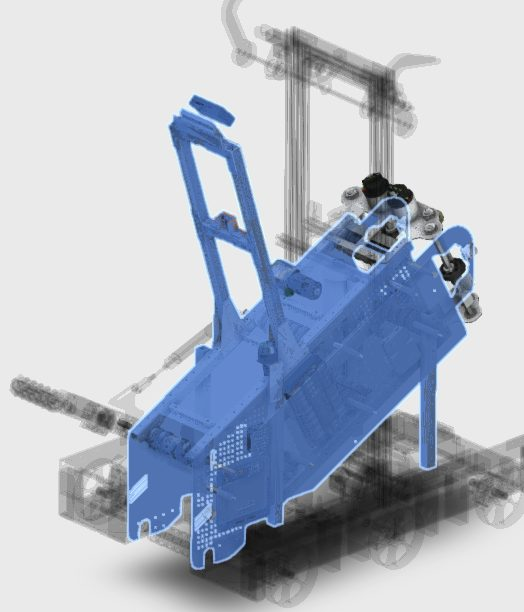
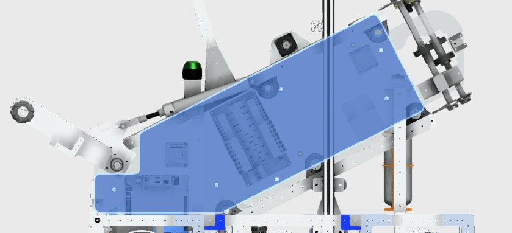
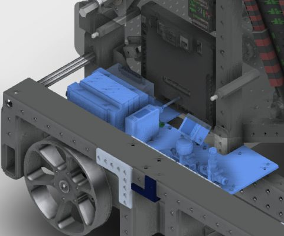
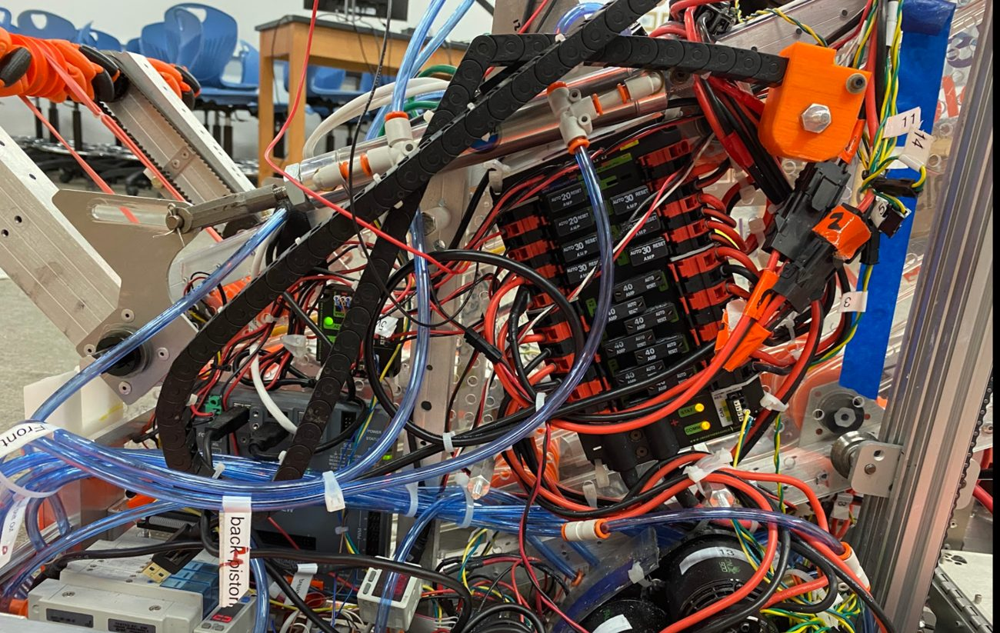
Results
- Ranked 14th at the Midwest Regional Competition
- #1 DPR (defensive robot)
- The team would have gone to Worlds for the 1st time in 7 years, but COVID :(
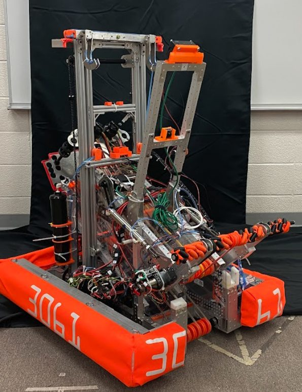
Lessons Learned
- Systems integration is really important. It caused a lot of assembly & maintenance headaches.
- Do we need a dual stage gearbox?
- Motor pinions could be better supported on the gearbox.
- How can we reduce exposed wires?
- Intake analysis: the design is overkill in some respects, under supported in others.
- Intake prototype: it did not reflect reality with slot compliance.